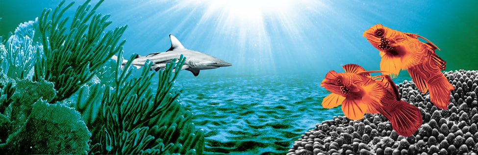
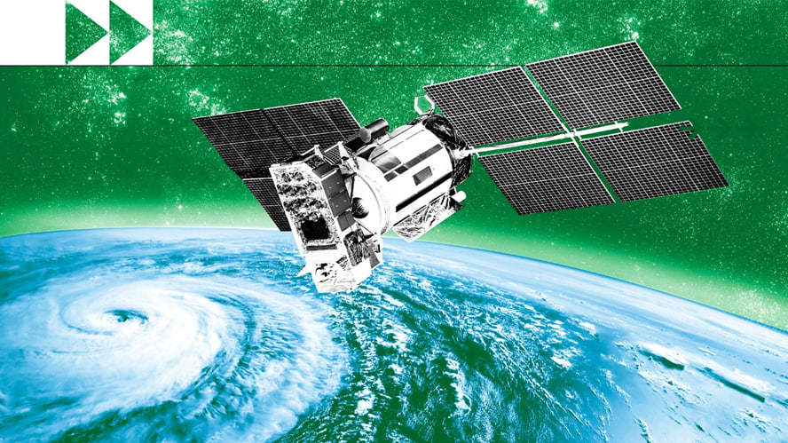
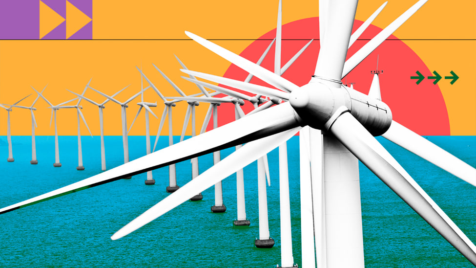
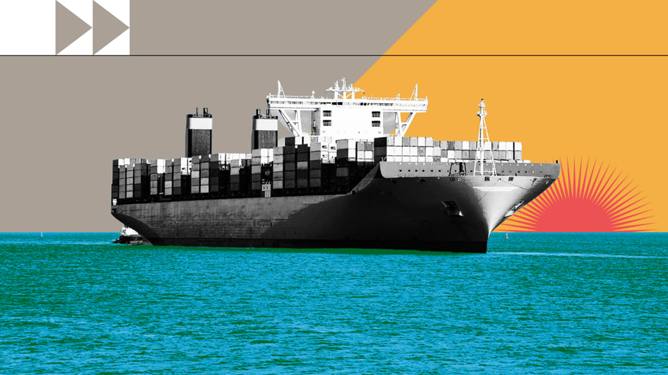

Climate regulation

The ocean – the world’s greatest ally against climate change
The ocean produces half of the oxygen we require, absorbs a quarter of all carbon dioxide emissions, and absorbs 90% of the excess heat produced by these emissions. It is not only the planet's lungs, but also its greatest 'carbon sink,' acting as a key buffer against the effects of climate change. The ocean plays a critical role in lowering global greenhouse gas emissions and stabilizing the Earth's climate. However, rising greenhouse gas emissions have harmed the ocean's health, warming and acidifying seawater, causing harmful changes to life under water and on land, and diminishing the ocean's ability to absorb carbon dioxide and protect life on Earth. Here are a few reasons why we should protect the ocean as our best ally.
Here are a few reasons why we must protect the ocean as our most powerful ally in the fight against climate change.
1-The resilience of coastal communities
More than 680 million people, or about 10% of the global population, live in low-lying coastal zones. Highly fragile communities in low-lying places, especially small islands, are 15 times more likely to be killed by floods and storms than regions with very low vulnerability. Ocean-climate action must mitigate these impacts while also building resilience for ecosystems and coastal populations who rely on a healthy ocean. This would include adaptation measures that foresee hazards, vulnerabilities, and remedies, such as early warning systems and sustainable nature-based solutions to assist communities in dealing with changing coastlines and ecosystems. Early warning systems have the ability to save many lives and livelihoods threatened by climate-related disasters by allowing individuals and communities to respond to hazards in a timely and appropriate manner. A 24-hour warning, in fact, can reduce the coming damage by 30%. Today, one-third of the world's population is still unprotected by early warning systems, primarily in least developed countries and small island developing states. UN Secretary-General António Guterres has tasked the World Meteorological Organization with leading an effort to ensure that everyone on Earth is protected by early warning systems against more extreme weather and climate change within the next five years.
2-The potential of ocean and wind energy
Off-shore wind and ocean energy, produced from natural sources such as wind, water, and tides, do not emit carbon dioxide or other greenhouse gases that contribute to global warming. Airflow through wind turbines mechanically turns electric generators, generating offshore wind power. Wind energy technology, which has been around for millennia, has advanced in recent years to maximize the amount of electricity produced. Wind power has the potential to meet more than one-third of the world's energy needs, making it the world's leading energy source. Denmark was the world's first country to construct an offshore wind farm. Ocean energy systems harness the kinetic and thermal energy of seawater, such as waves or currents, to generate electricity or heat. Ocean energy systems are still in their infancy, with a number of prototype wave and tidal current devices being investigated. Ocean energy has the potential to easily outstrip current human energy needs.
3-The prospects of green shipping
Maritime transportation transports around 80% of global trade, accounting for nearly 3% of global greenhouse gas emissions. It is critical in the fight against climate change to reduce ship CO2 emissions to zero by 2050. This entails shifting away from old fossil fuels and towards new zero-emission energy sources like hydrogen, ammonia, methanol, or wind. Green shipping corridors, which are maritime routes between two ports that support zero-emissions technologies for ships, are one approach to speed the shipping sector's decarbonization. Green lanes already exist across the Pacific between the ports of Los Angeles and Shanghai, as well as across the Atlantic between Antwerp and Montreal. Decarbonization of the maritime sector may be a global driver for green development by investing in innovative technologies and making sustainable alternative fuels more competitive. Green shipping is an integral component of a sustainable blue economy, which fosters economic growth and people's well-being through good production, trade, and shipping practices that do not harm our ocean's health.
conclusion
Oceans are critical to Earth's life and climate management since they encompass 71% of the planet's surface and account for 95% of all available space. They also control temperature and weather, influencing rains, droughts, and floods. However, the interaction of these natural forces is changing, with oceans absorbing one-third of the CO2 created by human activity and absorbing 90% of the excess heat trapped by rising greenhouse gases. As the ocean's energy and heat buildup in reaction to carbon emissions, extreme weather events, altering ocean currents, rising sea levels, and melting sea ice occur. Ocean chemistry is changing faster than ever before, increasing acidity levels, and potentially making the oceans too warm for coral reefs by 2050.